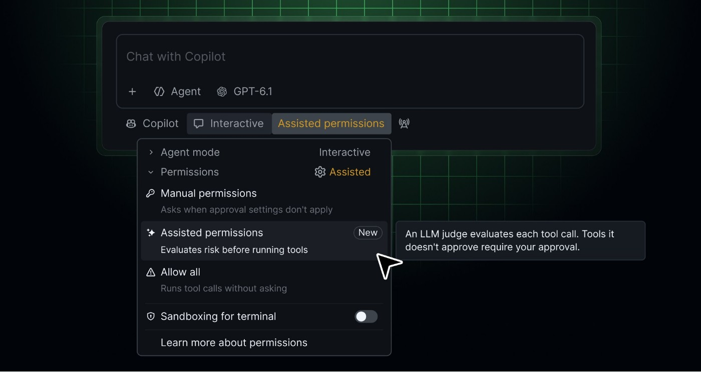

少一次批准，也需要知道少掉的是哪一次
编程代理开始任务时，常先读取文件、执行命令和访问资料。如果每一步都要求人回应，用户容易把批准变成机械动作。Copilot这次正式推出的辅助权限把部分请求交给模型筛选，让仍有疑问的动作才回到人面前。这里的输入是一次具体权限请求与任务背景，输出是是否可自动继续的决定，并非另一份代码建议。适合减少重复确认，但用户仍需要知道自动通过了什么；只比较弹窗数量，会漏掉审核质量是否变差，以及原本不该执行的动作是否被放行。
GitHub Copilot assisted permissions · 产品更新 · 官方资料

编程代理开始任务时，常先读取文件、执行命令和访问资料。如果每一步都要求人回应，用户容易把批准变成机械动作。Copilot这次正式推出的辅助权限把部分请求交给模型筛选，让仍有疑问的动作才回到人面前。这里的输入是一次具体权限请求与任务背景，输出是是否可自动继续的决定，并非另一份代码建议。适合减少重复确认，但用户仍需要知道自动通过了什么；只比较弹窗数量，会漏掉审核质量是否变差，以及原本不该执行的动作是否被放行。
GitHub文档把已有权限规则放在模型复核之前。已经允许的动作不一定再经过模型，禁止项也不会因为打开辅助模式就消失。开发者可以在CLI选择assisted，也可以检查当前模式或切回手动。对组织而言，允许辅助判断和允许全部放行是不同设置，管理员能分别控制。产品交互上，默认值影响新会话，却不能让用户误以为所有旧会话也已经切换。团队部署时应明确当前会话显示什么、政策改变后如何反馈，而不是仅发一张启用教程便假设所有机器状态一致。
交互会话中，无法自动通过的请求会询问用户；无人值守或自动驾驶模式中，仍需要人工批准的动作会被拒绝。这使同一任务在有人和无人运行时可能得到不同结果。维护脚本的人需要把这种停止理解为权限结果，不能直接归为模型能力不足。日志应能说明代理已经完成哪些步骤、哪一步没有执行，以便恢复时避免重复外部动作。辅助复核也不覆盖所有工具或沙箱越界请求，不能因为一个测试命令自动通过，就推断后续部署、网络或文件操作都会得到相同处理。
对于已有细粒度规则的团队，辅助模式应与原有边界一起评估，而不是把所有限制删除后再让模型补回来。一个合理试用任务可以保留常用只读操作，观察需要写入或访问新位置时的实际处理，并检查模糊请求能否清楚返回给人。成本不只有等待确认，也包括事后调查与恢复。当前文档提醒模型可能误批，产品并未给出绝对安全保证。若用户必须花更多时间追查自动批准记录，少点几次按钮未必是净节省；相反，明确且可复核的决定才方便把这种模式用于真实项目。